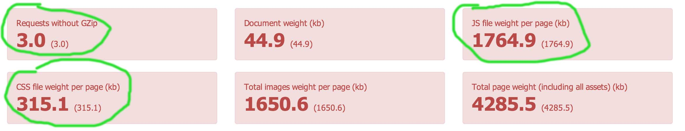

Here are the most important changes:
With the new release sitespeed.io has been tested (and fixed) to work on Windows 8.1. You can run analyze and fetch metrics, create the JUnit results and test multiple sites at once. Check out the timing metrics fetched using Internet Explorer 11:
Browser Time has been updated to a new version that works in Windows (and actually also fetch resource timing data, but that isn't used in sitespeed right now).
If you use Chrome or Internet Explorer that reports the first paint time, it will automatically be showed as metric on the summary page. All browser will also show the new fields as default: requestsMissingGzip (how many requests that are missing GZip), jsWeightPerPage (the Javascript weight per page in kb) and cssWeightPerPage (the CSS weight in kb per page).

Now you can hover on the each metric on the summary page to see a description of what it measured.
See all the changes done in this release.